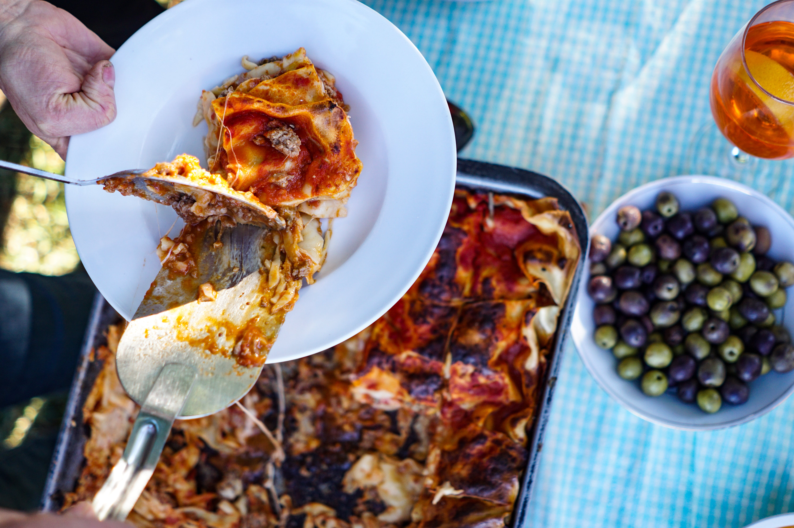

Le goût enrobant du bacon !
Salle Américaine
Explorez l'évolution des lasagnes dans la culture américaine. Des expositions vous guideront à travers les influences et les variations. Les visiteurs peuvent savourer des lasagnes remplies de viande hachée, de fromage cheddar fondu et de bacon croustillant. C'est une exploration gastronomique de la fusion entre le style américain et le plat classique italien.
Découvrir